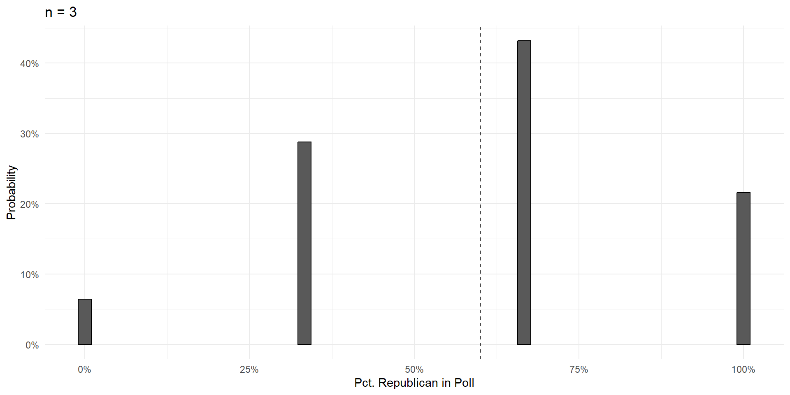
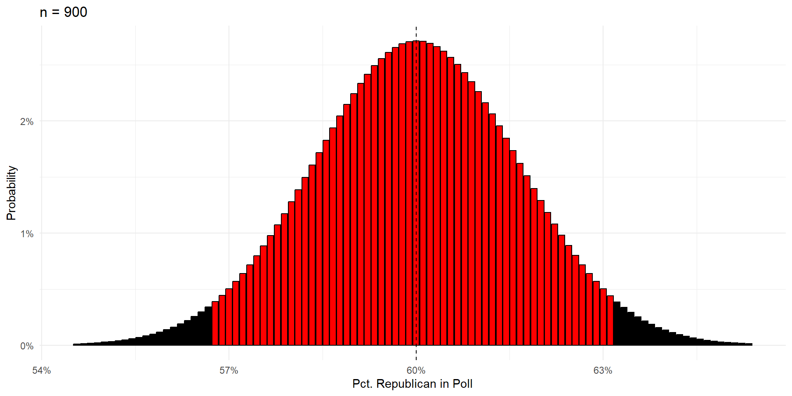

Bell Curves
POLS 3220: How to Predict the Future
Today’s Agenda
- Introduce the bell curve probability distribution
- AKA the normal distribution or the Gaussian distribution
- Understand the conditions that create bell curves (the Central Limit Theorem)
- Explore some useful features of bell curves for making predictions
Warmup
- In an upcoming Congressional election:
- 60% of voters plan to vote for the Republican candidate.
- 40% of voters plan to vote for the Democratic candidate.
- A polling firm randomly calls voters in the Congressional district and asks who they plan to vote for.
Draw a probability tree representing the first two voters contacted by the polling firm. What is the probability that the poll contacts one Democratic voter and one Republican voter?
Simplifying Assumption
Because we don’t care about the order of responses (just the counts), we can combine some outcomes:
Increasing Poll Size
Over the next few slides, we’ll show that increasing the size of the poll \((n)\) does three things:
- Eliminates bias
- Reduces variance
- Gives the polling errors a useful (bell curve) shape.
We can plot these compound probabilities on a bar chart.

n=4
I would never make you do this by hand.
n=5

Intuition Check: Why is the probability of 3R,2D so big and the probability of 0R,5D so small?
n=6

Things To Notice
With a large enough sample, the poll results are unbiased. Centered on the truth, and equally likely to be too high or too low.
Variance shrinks with poll size.
- In a poll of 50 voters, there’s a strong chance you get a result off by 10 percentage points and call the election incorrectly.
- In a poll with 500 voters, it’s practically impossible that the result will be off by more than 10 percentage points.
Central Limit Theorem
As poll size gets larger, the shape of the errors takes on that gorgeous bell curve shape.
This is one of the most foundational ideas in all of statistics.
- Central Limit Theorem
-
If an outcome is the sum of a large number of independent random events, then it will fall on a bell curve.
- The number of Republicans in a poll is the sum of a large number of independent random events.
Bell Curves In The Wild
Human height is the sum of a large number of independent genetic and environmental factors, so…
Bell Curves In The Wild
Human height is the sum of a large number of independent genetic and environmental factors, so… . . .

Bell Curves In The Wild
Standardized test scores are the sum of a large number of independent question scores, so…
Bell Curves In The Wild
College football scores are the sum of a large number of independent successes / failures to get the ball to the other end of the field, so…
Bell Curves Are Useful
When outcomes fall on a bell curve, it makes prediction a lot easier.
That’s because outcomes are very unlikely to stray far from their expected values.
Bell Curves Are Useful
95% of poll results will be one of the red bars.

Bell Curves Are Useful
95% of poll results will be one of the red bars.

Margin of Error
Every poll has a margin of error, the “plus-or-minus” range around the truth within which we expect the poll to fall 95% of the time.
Margin of error is approximately \(\frac{100\%}{\sqrt{n}}\).
So, for a poll with 100 respondents, margin of error is roughly \(\frac{100\%}{\sqrt{100}} = 10\%\).
There should be less than a 5% chance that the poll is off by 10 percentage points or more.
Practice: what’s the margin of error for a poll with 400 respondents?
Wrap Up
If your outcome is the sum of a large number of independent random events, then it should fall on a bell curve (Central Limit Theorem).
This theorem is useful for making predictions, because bell curves are easy to work with.
- In a few weeks, we’ll talk about the ways in which real-world polls fall short of this idealized model.
- For now, it’s helpful to think of this as a lower bound on our uncertainty.
Next Time: What happens when that independence assumption is violated?